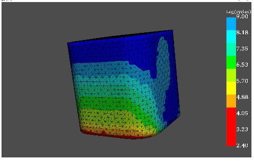
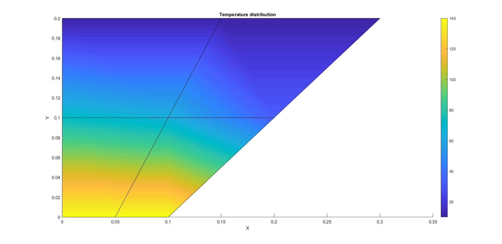
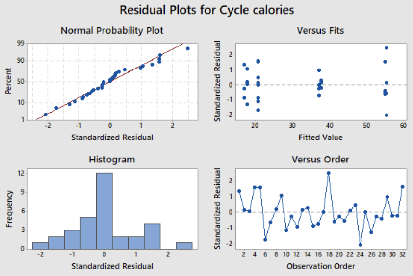
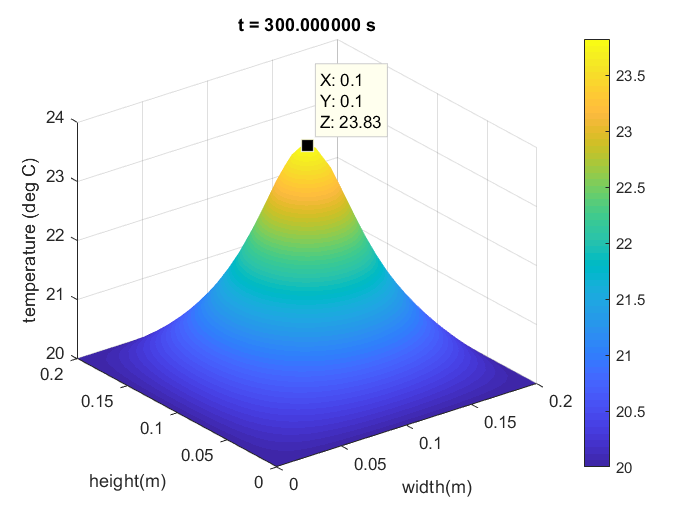
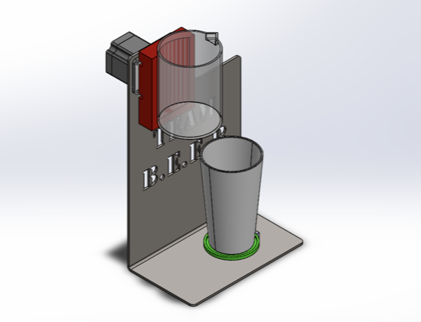

Engineering Projects
I believe in understanding the fundamental engineering principles and manufacturing processes behind the software, rather than just operating the tools. Click on any project image below to view the detailed image gallery, including CAD models, physical prototypes, and analysis plots.

Click to View Gallery
Design and Fabrication of Go-Karts (GKDC, IKR)
Tools: SolidWorks, ANSYS Workbench, Arc Welding
Co-led the chassis engineering department for a competitive racing team. Engineered the complete base frame and bodywork concepts, optimizing critical chassis, sprocket, and steering components for weight and cost using SolidWorks.
Facilitated vehicle assembly and testing through hands-on machine shop experience, aiding operational readiness on the track.
Engineering Impact: Achieved 2nd and 3rd place for 2 consecutive years in national competitions, showcasing exceptional teamwork and physical fabrication skills.

Click to View Gallery
Algorithmic Low Cycle Fatigue (LCF) Evaluation Tool
Tools: Python, MATLAB, ANSYS | Quest Global
Developed a functional strain-based fatigue life evaluation tool as an industrial design project using Python, resolving critical system errors during the build.
Bridged the gap between commercial software and specialized analysis by calculating the exact LCF life of every single node in an FEA simulation.
Engineering Impact: Enhanced fatigue prediction accuracy by implementing Neuber and mean stress corrections alongside the Newton-Raphson iterative method into the calculation scripts.

Click to View Gallery
First-Principles Heat Conduction FEA Coding
Tools: MATLAB, ANSYS Workbench
Rather than simply using commercial software, I built an FEA solver from scratch. Coded a comprehensive MATLAB FEM model to calculate temperature and flux distribution across an isotropic chimney.
Programmed the mathematical backbone using the Gauss Quadrature Integration technique to convert physical coordinates into reference coordinates.
Engineering Impact: Exhibited a deep, foundational mastery of Finite Element Analysis mathematics, achieving < 1% error when validated against commercial ANSYS steady-state thermal results.

Click to View Gallery
Statistical Design of Experiments (DoE) Validation
Tools: MINITAB, Statistical Analysis
Led a data-driven investigation to validate wearable device calorie estimations against physical gym bicycle sensors. Executed a controlled, rigorous 2^3 Full Factorial Design matrix.
Conducted advanced statistical analysis, incorporating Minitab to randomize data runs and analyze collected data streams to establish statistical significance.
Engineering Impact: Proved highly capable in Six Sigma and Quality Control methodologies. Ready to apply statistical rigor and Minitab analysis to optimize real-world manufacturing processes.

Click to View Gallery
Transient Heat Conduction Analysis of a 2D Plate
Tools: MATLAB , Numerical Methods (FTCS & ADI)
Numerically solved the 2D differential equation for transient heat conduction from a rectangular plate. Efficiently coded a MATLAB program executing both Forward Difference in Time and Central Difference in Space (FTCS) and Alternating Direction Implicit (ADI) schemes.
Minimized computational time and storage space through optimized MATLAB functions. Engineered a custom logic to modify the standard ADI method, eliminating its directional bias by alternating implicit scheme applications across time increments.
Engineering Impact: Demonstrated advanced proficiency in computational methods and algorithm optimization for complex thermal simulations, validating performance against multiple numerical schemes.

Click to View Gallery
Mechatronic Automated Pouring Machine
Tools: SolidWorks, Arduino Mega, Stepper Motors, Load Cells
Designed and built a mechatronic system capable of ultra-precise liquid dispensing. Integrated mechanical hardware with electronic sensors by calibrating a Load Cell to provide real-time weight feedback to an Arduino Mega microcontroller.
Wrote the control logic in Arduino, successfully implementing a Proportional-Integral (PI) control loop to drive a NEMA 17 Stepper Motor based on the exact weight differential.
Engineering Impact: Demonstrated strong cross-disciplinary ability in Mechatronics, integrating mechanical design with IoT/sensor hardware and automated control logic.